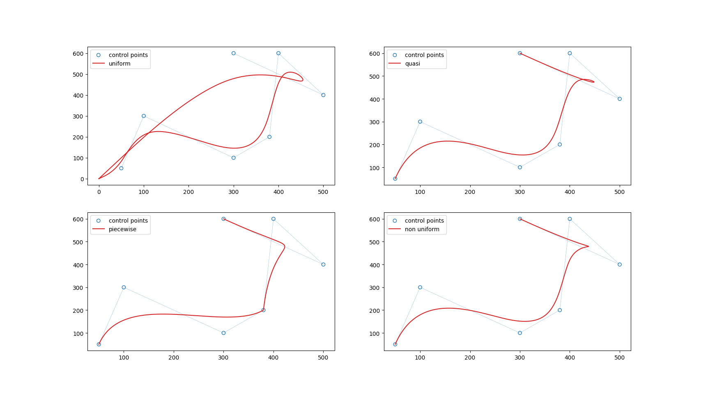

B样条曲线简述及其python实现
1. B样条曲线的计算公式
B 样条曲线 \(P(u)\) 可以表示为控制点和基函数的加权和： \[ P(u)=\sum_{i=0}^{n} {p_i B_{i,k}(u)} \ ,u\in \left[ u_{k-1}, u_{k+1} \right] \tag{1} \]
2. 符号解释
2.1 \(P(u)\)
B 样条曲线上的点，也是我们所要求的结果。
2.2 \(p_i\)
控制点， \(i=0,1,2,..,n\)，一共有 \(n+1\) 个。
2.3 \(B_{i,k}\)
基函数
2.4 \(u\)
相当于自变量，有效区间为 \(\left[ u_{k-1}, u_{k+1} \right]\)。
2.5 \(k\)
B 样条曲线的次数，这里要注意次数和阶数的区别和联系：次数 = 阶数 - 1。
对于 B 样条的次数 \(k\)，必须满足： \[k = m - n - 1 \tag{2}\] 其中 \(m\) 是 节点 (knots) 将 B 样条曲线划分的段数，\(n\) 为控制点的个数减一。
上面说的节点就是划分 B
样条的比例，由节点组成的一组向量就成为节点矢量，例如
[0, 0.2, 0.4, 0.6, 0.8, 1]。不同的节点矢量进而产生了不同的
B 样条种类，例如均匀 B 样条、准均匀 B 样条、分段 B 样条以及非均匀 B
样条等等。
3. 基函数的计算
de Boor-Cox递归方法
\[
B_{i,k}(u)=\frac{u-u_i}{u_{i+1}-u_i}B_{i,k-1}(u)+\frac{u_{i+k}-u}{u_{i+k}-u_{i+1}}B_{i+1,k-1}(u)
\tag{3}
\]
这里需要给出说明，不带下标的 \(u\) 指的是 2.4 中的 \(u\)，而带下标则指的是节点矢量。
在代码实现中，我们规定 \(\frac{0}{0}=0\)。
4. 节点矢量 (knots) 的计算
节点矢量的取值可以是在 0 到 1
之间，也可以是其他范围，但是在代码是实现的时候一定要注意前后保持一致。
本文使用节点矢量取值为 0 到 1，这样也可以表示比例嘛。
这里需要注意节矢量的长度，也就是 \(m\)，通过式 (2) 可知，\(m=k+n+1\)。
4.1 均匀节点 (uniform node)
显然，节点的分布是均匀的，故从 0 到
1按照节点矢量的长度均匀划分即可。
（因为要将曲线划分为 m 段，当然需要 m+1个点）
1
2
3
4def uniform_node(control_points, k=3):
num, _ = control_points.shape
n = num - 1
return np.linspace(0, 1, n + k + 2) # m = n + k + 1
均匀 B 样条曲线不一定过首尾控制点，并且在图像上是闭合的
4.2 准均匀节点 (quasi uniform node)
准均匀节点可以目的在于对曲线的端点进行行为控制，通过设计节点矢量，使得生成的
B 样条曲线经过首尾控制点。
\(k\)
次准均匀节点矢量中，两端节点具有重复度 \(k+1\)，所有内节点呈现均匀分布。
在代码实现中，我们可以让节点矢量首尾分别为 \(k\) 个 0 和 1，然后中间 \(n-k+2\) 为 0 到 1 的均匀分布就行了，即
\[
\left[ \begin{matrix}
\underset{k}{\underbrace{0,0,...,0}},\
\underset{n-k+2}{\underbrace{0,...,1}},\
\underset{k}{\underbrace{1,1,...,1}}\\
\end{matrix} \right]
\]
1 | def quasi_uniform_node(control_points, k=3): |
4.3 分段节点 (piecewise node)
基于该节点矢量的 B 样样条曲线又称为分段 Bezier
曲线，是一组顺序首尾相接且同为 \(k\)
次的 Bezier 曲线。
\(k\)
次的分段节点矢量中，首末端节点重复度依旧为 \(k+1\)，内节点重复度为 \(k\)
1 | def piecewise_node(control_points, k=3): |
需要注意 \(n-k\) 必须是 \(k\) 的整数倍，否则不能生成曲线。
4.4 非均匀节点 (non-uniform node)
Hartley-Judd 算法 首尾重合度为 \(k+1\)，内节点定义为：
\[ \begin{cases} t_k=0\\ t_i=\sum_{j=k+1}^i{\bigl( t_j-t_{j-1} \bigr)} \\ t_{n+1}=1\\ \end{cases} \tag{4} \] \[ t_i-t_{i-1}=\frac{\sum_{j=i-k}^{i-1}{l_j}}{\sum_{i=k+1}^{n+1}{\sum_{j=i-k}^{i-1}{l_j}}} \tag{5} \]
1 | def non_uniform_node(control_points, k=3): |
5. python 实现
1 | import numpy as np |
效果：

todo：
很诡异的一点，在 cal_curve 函数中计算 \(k\) 的时候，满足 \(k=m-n-1\)
的时候，后三种样条曲线都不经过首尾控制点，这是不符合预期的，但是用 \(k = (m+1) - n - 1\)
的时候，却和正常预期的结果一样，不知道是哪里出问题了。
有空了再来填补空缺
6. 参考
[1] 计算机图形学-中国农大-赵明-B站
8.5.1~8.6.2
[2] 详解样条曲线-CSDN
[3] B样条曲线和Nurbs曲线
图文并茂的理解节点和节点区间-知乎
[4]《计算几何算法与实现》—— 孔令德